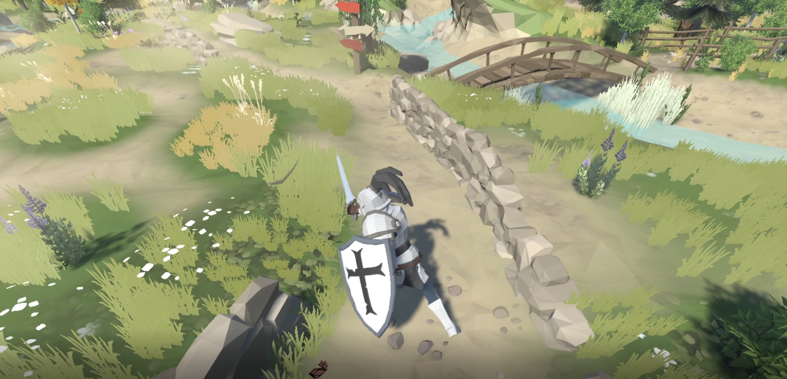
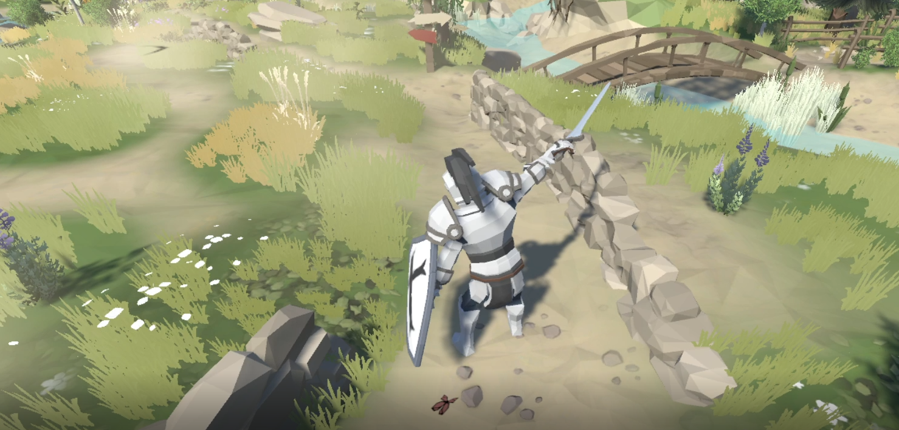
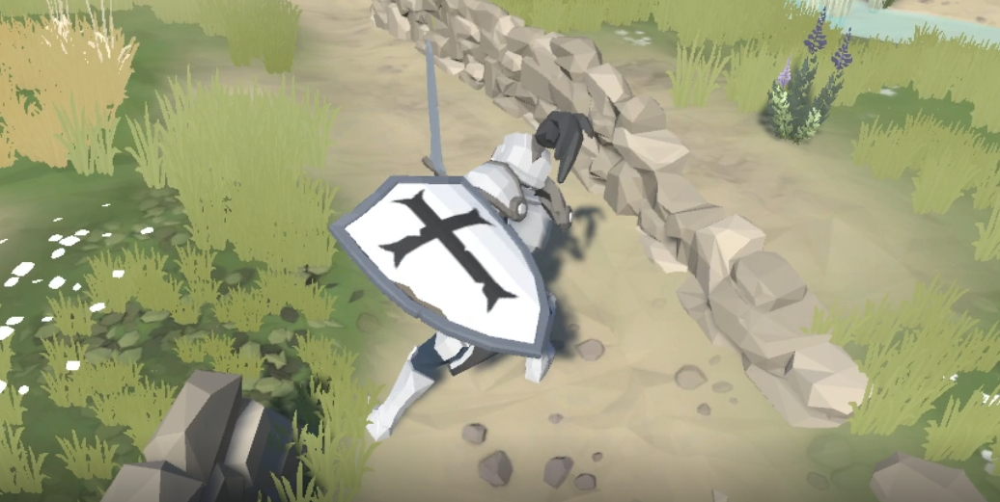

Jugabilidad y mecánicas
Jugabilidad
Objetivo
El jugador tiene que terminar un escenario antes de que termine el tiempo para obtener recompensas.
Para ello los objetivos del jugador serán eliminar a una cierta cantidad de enemigos en un escenario para desbloquear el acceso a los jefes una vez vencidos estos jefes se termina el escenario y el jugador obtiene equipamiento que le permiten mejorar sus estadísticas y sinergias con las habilidades.
Progresión
Al final de cada escenario el jugador obtendrá una pieza de equipo que podrá añadir un efecto adicional a sus habilidades o mejorar los efectos ya existentes además de aumentar las estadisticas que ofrece el equipo en función de la dificultad del escenario.
Esto significa que el jugador cuanto mayor sea la dificultad del escenario mejor equipamiento obtendrá permitiendo acceder a mayores escenarios.
Obtener mejor equipo nos dará la posibilidad de acceder a mayores dificultades
El hacer mayores dificultades permitira al jugador aumentar posiciones en el ranking.
Ejemplo ranking:
Raider IO - World of Warcraft
Ejemplo dificultades:
Fallas superiores - Diablo III
Ciclo de vida
Mecánicas
Entorno
Las mecánicas de entorno están divididas en dos partes, la primera parte son las mecánicas obligatorias que el jugador debe completar para terminar un nivel las cuales son.
Debes terminar el escenario antes de que se termine el contador de tiempo.
Para terminar el escenario debes de elegir que tropas vencer para llenar una barra con porcentaje mientras te abres paso por el escenario.
Debes vencer a todos los jefes que haya en el escenario.
Cada vez que mueras se te restarán 25s del contador de tiempo de la mazmorra.
En cuanto a lo que se refiere a las mecánicas adicionales, dependiendo del nivel el jugado podrá encontrar armas, herramientas y objetos que le ayudarán a progresar más rápidamente por el nivel, estos objetos estarán ubicados estratégicamente para que el jugador tenga que plantearse si es eficiente luchar contra enemigos para obtener o interactuar con estos objetos.
Los objetos planteados para el prototipado son:
Runa de vida: el jugador podrá recuperar un 30% de la vida que le falte.
Dinamita: El jugador podrá interactuar con esta dinamita para encenderla y que detone haciendo daño en área a todos los enemigos y aliados que estén dentro del alcance de la explosión.
Cajas: Situadas en el entorno estas cajas podrán dar efectos a nuestro personaje como:
Daño aumentado. (25%)
Velocidad de ataque aumentado. (25%)
Defensa aumentada. (25%)
Velocidad de movimiento reducida. (13%)
Daño reducido. (12%)
Jugador
Para la versión del prototipado del juego el objetivo es ofrecer un combate fluido y dinámico con el objetivo de prestar al jugador un amplio abanico de decisiones a la hora de combatir.
Para ello el jugador tendrá las siguientes acciones en el combate:
-
Ataques básicos:
Combo 1
Combo 2
Combo 3
-
Bloqueo
Con capacidad de bloquear completamente ataques de enemigos y hechizos, exceptuando efectos de área.
-
Salto
El jugador podrá saltar para superar obstáculos o tener posiciones más aventajadas.
-
Habilidad básica
El jugador dispondrá de un hechizo básico que podrá prestarle movilidad o daño en función de la clase que seleccione.
-
Habilidad intermedia
Para poder añadir dinamismo al combate el jugador tendrá esta habilidad que permitirá realizar gran daño en área.
-
Habilidad definitiva
El personaje será capaz de lanzar una habilidad definitiva que potencie sus otras habilidades y estadísticas, esta habilidad tendrá mucho tiempo de reutilización.
Enemigos
El objetivo es tener una variedad extensa de enemigos que en función de su rareza el jugado conozca la peligrosidad del enemigo en cuestión. Estos se dividen en 3 rarezas distintas.
Enemigos comunes:
Los enemigos comunes son los enemigos que se encontrará el personaje con mas abundancia dentro de los escenarios, estos enemigos no tendrán ninguna habilidad característica mas allá de ataques cuerpo a cuerpo / a distancia.
Caballero esqueleto:
El caballero esqueleto como enemigo común será un enemigo que tendrá poco ataque, pero algo más de defensa y vida. Tendrá dos acciones de combate posibles:
Ataque básico.
Posición defensiva: Levanta el escudo en una posición defensiva lo que reduce el daño recibido. Impide realizar otras acciones.
Arquero esqueleto:
Enemigo que a rango puede ser muy peligroso, siempre intentará mantener las distancias y atacarnos desde una posición segura. Acciones de combate:
Ataque básico: Dispara con el arco.
Abanico de flechas: Dispara una salva de 3 flechas para atacar en área.
Guerrero goblin:
Un enemigo común que realizará ataques básicos. En solitario no es ninguna amenaza, pero en conjunto con otros goblins es bastante peligroso. Las acciones de combate de los guerreros goblin son las siguientes:
Ataque básico: Puede atacar cuerpo a cuerpo o a distancia en función si posee una espada o un arco.
Grito de guerra goblin: Aumenta la velocidad de movimiento. Requiere una espada.
Veneno goblin: Impregna las flechas de veneno que tiene una probabilidad de infectar al objetivo. Requiere arco.
Enemigos elite:
Generalmente representarán a enemigos un poco mas poderosos que los enemigos comunes, tendrán una o dos habilidades adicionales además de mayores estadísticas tanto de vida como de daño.
General goblin:
El general dirige a las tropas goblin en el combate, con mucha resistencia y daño es un enemigo bastante peligroso. Sus habilidades son:
Ataque básico: utiliza su maza para atacar.
Grito de guerra: Aumenta el daño de las tropas aliadas cercanas.
Llamada a la batalla: Llama a los goblins guerreros cercanos y de las chozas cercanas.
General chamán:
Enemigo de elite que canaliza poderosos hechizos para realizar todo el daño posible. Los hechizos son los siguientes:
Bola de fuego.
Oleada oscura, Ataque que infringe daño y reduce la defensa del objetivo.
Restauración, cura alrededor del chamán.
Jefes
Los jefes serán los enemigos mas poderosos que se tendrán que enfrentar los jugadores. Estos jefes tendrán 3 fases en las que ganarán mas habilidades.
Las fases de los jefes sucederan cada 30% de vida, activando las siguientes habilidades del jefe.
Thunok el profanador:
Enemigo final del prototipado, el jefe realizará ataques lentos pero muy fuertes, castigando mucho el error del jugador.
Ambestida sombría, carga contra el enemigo realizando daño y aturdiendo todo enemigo a su paso.
Abrazo de la oscuridad, posiciona un área bajo un jugador que tras pocos segundos lo inmoviliza siempre que esté encima del área.
Torbellino. Thnunok empieza a girar sobre si mismo haciendo daño con su espada a todo enemigo que este alrededor de el.